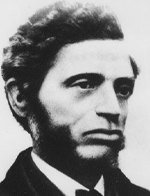

|

|

|
|
|
Born in Boston, the son of William G. Nell, an associate of David
Walker, and Louisa, a native of Brookline, Mass., William Cooper Nell
attended a local black grammar school and graduated from a mixed school.
Although he was an honor student, he did not, because of his color,
receive a prize. This discrimination led him to campaign for equal
rights for black children; he briefly studied law, and in 1831, inspired
by Garrison's Liberator, immersed himself in the antislavery
cause. Nine years later he joined prominent white abolitionists in
petitioning Boston for desegregated schools. Subsequently rejected, it
marked the beginning of Nell's fight to end separate schools.
In the early 1840s he began his lengthy association with the
Liberator, writing articles, supervising its Negro Employment
Office, and representing Garrison at various antislavery functions. When
Frederick Douglass returned from Europe in 1847, Nell presided over the
welcoming home ceremonies, and then accompanied Douglass to Troy, N.Y.,
where they attended the National Colored Convention. Both, however,
looked on "complexional" organizations as obsolete, serving only to
alienate white organizations. That winter Nell became publisher of
Douglass's North Star; he also became active in New York State
antislavery organizations. On occasion he rebuked those who failed to
support the abolitionist press more enthusiastically. He reserved his
most heated reproofs, however, for the American Colonization Society,
which he denounced in the press.
In 1850 he ran unsuccessfully for the Massachusetts legislature on
the Free Soil party platform. Also that year, Nell united with other
blacks and whites in forming a Committee of Vigilance to undermine the
Fugitive Slave Act. He also took an active role in the Underground
Railroad, until a serious illness forced his temporary retirement.
Undaunted, he continued to write, and in 1851 issued a
twenty-three-page pamphlet, The Services of Colored Americans in the
Wars of 1776 and 1812. In conjunction with its publication he sent
the first of many petitions to the Massachusetts legislature for a
Crispus Attucks Memorial. That same year, when Douglass formally broke
with Garrison, Nell left the North Star, and two years later
formed a Garrisonian Association in support of his editor. Shortly
thereafter he attended the Rochester (N.Y.) National Convention of
Colored Men, where he and Douglass came into direct and heated conflict.
Douglass accused Nell of conspiring against him. Nell denied the
accusation, but Douglass remained unconvinced and the breach widened.
In 1855 Nell published a more comprehensive history, The Colored
Patriots of the American Revolution. On April 28 of that year the
Massachusetts legislature abolished segregated schools. In recognition
of his efforts, Massachusetts blacks and leading whites held a
presentation dinner honoring Nell.
Three years later, in opposition to the Dred Scott decision, Nell
staged the first Crispus Attucks celebration in America. He abhorred the
fact that both the federal and state governments were "shaping their
legislation to practically enforce the atrocious" decision, and he
unsuccessfully petitioned the Massachusetts legislature to declare the
decision unconstitutional.
Despite the many setbacks delivered to black Americans, Nell strongly
criticized those blacks who preached despair. Instead he advised them to
"take counsel of their hopes, rather than be depressed by their fears."
When the Civil War erupted, Nell took up the cause of black America's
equal participation in the war effort. That spring he claimed the honor
of being one of the first blacks appointed to a federal post. The
postmaster of Boston, John G. Palfrey, had nominated him for postal
clerk, a position he held until his death in 1874, caused by "paralysis
of the brain." He was survived by his widow whom he had married in April
1869. Appropriately, his mentor and friend William Lloyd Garrison
delivered the eulogy.
Source: Rayford W. Logan and Michael R. Winston, eds. Dictionary
of American Negro Biography (New York: W. W. Norton, 1983), 472-73.
|